01
Железный лист с мелкой волной
Волна ниже одного сантиметра. Поэтому лист выглядит ровно и хорошо стоит на заборе. На крышу дома он не годится: вода может перелиться через такую низкую волну.
Профнастил С8
Первая смена с этим листом
Делаем мир крепче
Это готовый железный лист для забора. Ниже по порядку: что это, какой цвет взять и что положить покупателю вместе с листом. Цену называйте с ценника.
Можно прочитать вслух. Здесь нет ничего, что надо учить наизусть.
01
Волна ниже одного сантиметра. Поэтому лист выглядит ровно и хорошо стоит на заборе. На крышу дома он не годится: вода может перелиться через такую низкую волну.
02
Ширина 1,2 метра, длина 2 метра. Под другой размер этот лист не режем. Один лист весит около 9 кг. Край острый, как у крышки от консервы.
03
Лист ставят стоймя. Высота забора как раз 2 метра. Так его берут чаще всего. Ещё им закрывают стену сарая и калитку.
04
Нужны столбы, поперечные трубы, шурупы в тот же цвет и перчатки. Это всё ниже, по одной вещи.
Листы одинаковые. Отличается только цвет. Смотрите на крышу дома и берите такой же.
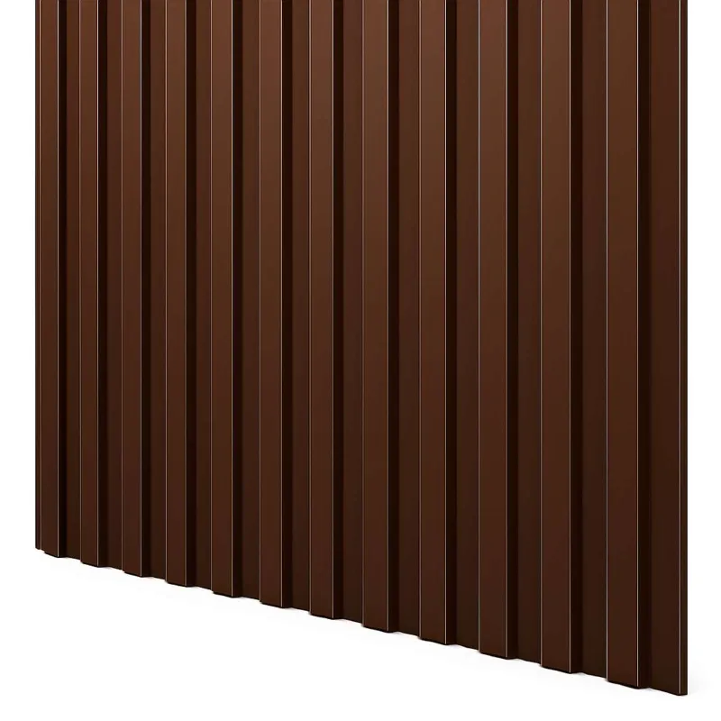
Коричневый
На ценнике: профнастил С8, 1,2×2 м, 0,45 мм, коричневый RAL 8017. На шурупах этот цвет подписан так же: RAL 8017, шоколадно-коричневый.
«Крыша коричневая. Берём этот лист и шуруп того же цвета.»
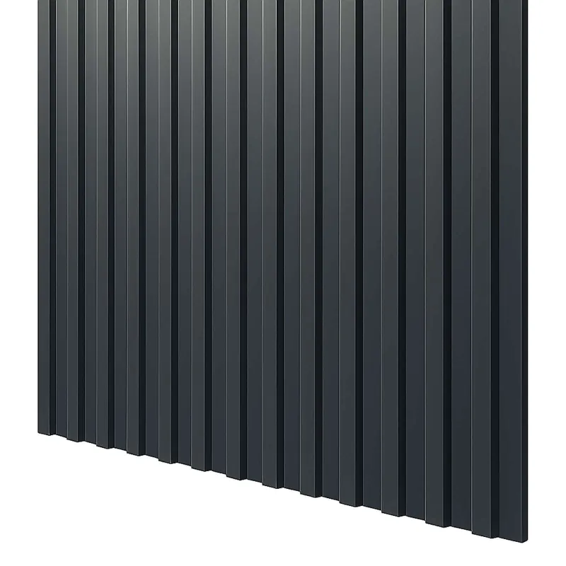
Серый
На ценнике: профнастил С8, 1,2×2 м, 0,45 мм, серый RAL 7024. Это графит. Он спокойно стоит рядом с серой крышей и тёмными окнами.
«Крыша серая. Берём графит, забор будет с домом одного тона.»
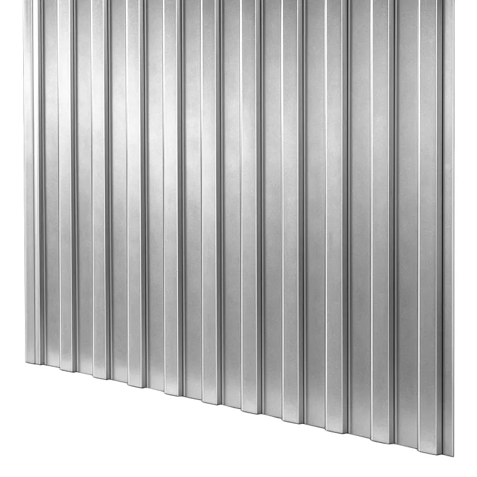
Без краски
На ценнике: профнастил С8, 1,2×2 м, 0,45 мм, цинк. Краски нет, лист светлый, как оцинкованное ведро. Его берут за сарай и туда, где потом будут красить.
«Если будете красить сами, берите цинк. Шуруп тоже светлый, с резинкой.»
У коричневого и серого листа краска с одной стороны. Эту сторону ставят на улицу. У цинка краски нет ни с одной стороны. Листы несите так, чтобы они не тёрлись лицом друг о друга: царапина потом ржавеет. Если цинк намокнет прямо в пачке, на листе выступают белые пятна. Пачку держите в сухом месте.
Спросите по очереди. Ответы сами подскажут, что положить в чек.
Делить в уме не нужно. Напишите длину забора в метрах и нажмите кнопку. Калькулятор уже знает, что соседний лист немного накрывает предыдущий.
Напишите длину, и здесь появится фраза, которую можно сказать покупателю.
Забор 10 метров и высотой 2 метра. Это 9 листов, 5 столбов, 12 поперечных труб и около 160 шурупов. Шурупы берите в цвет листа.
«На 10 метров берите 9 листов, 5 столбов и шурупы в тот же цвет.»
Так считаем прямой забор без ворот. Если ворота есть, их метры из длины уберите. Калитку шириной около метра обычно закрывает один лист. Угол двора один: общий столб на две стороны второй раз не берите. Столбы в калькуляторе стоят через 2,5 метра. Поперечных труб три ряда.
Ссылки ведут на наш сайт. Есть ли товар сейчас, смотрите на карточке. Цена тоже там.
Шуруп называется «саморез кровельный». Под шляпкой должна быть резинка: она прижимает лист и не пускает воду под шуруп. Цвет шляпки такой же, как у листа. Каркас из железных труб: берите размер 5,5×19. Каркас из деревянного бруска: берите 4,8×35. Резинку прижимают плотно, но лист не продавливают.
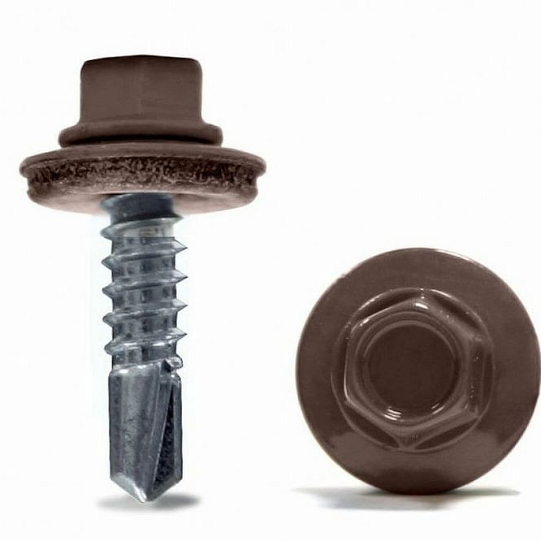
Пример. Крыша коричневая, столбы железные. Берём шуруп 5,5×19 того же цвета.
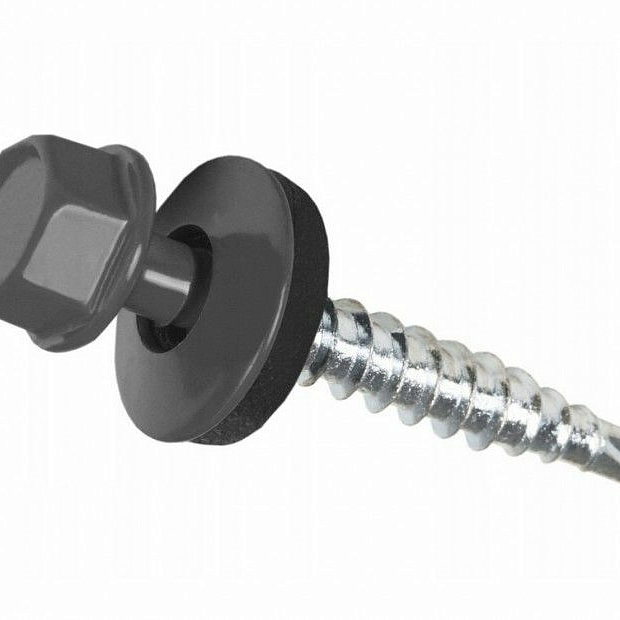
Пример. Крыша серая, каркас из бруска. Берём шуруп 4,8×35, шляпка серая.
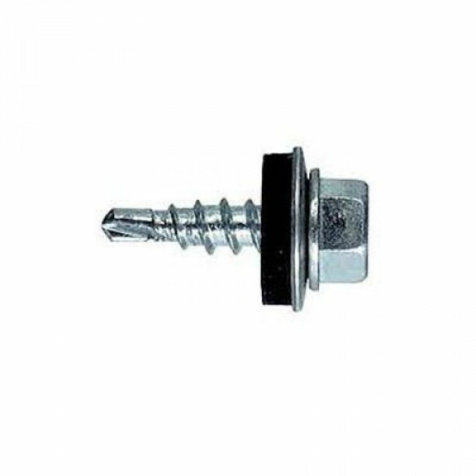
Пример. Лист без краски, столбы железные. Берём светлый шуруп 5,5×19.
Если 5,5×19 нет на полке, берите цинк 5,5×32.
Берите шуруп, у которого под шляпкой есть резинка. Если на карточке написано «без шайбы», этот шуруп для листа не берём: вода заходит под шляпку, и лист в этом месте ржавеет. Остальные кровельные шурупы лежат в разделе на сайте. Считаем их поштучно.
Столб: квадратная труба 60 на 60, длина 3 метра. Около метра уходит в землю, два метра остаются сверху. Это как раз высота нашего листа. Сверху на каждый столб надевают заглушку, чтобы дождь не лился внутрь трубы. Поперёк столбов крепят три трубы 40 на 20, тоже по 3 метра: внизу, посередине и вверху. На них и прикручивают лист.
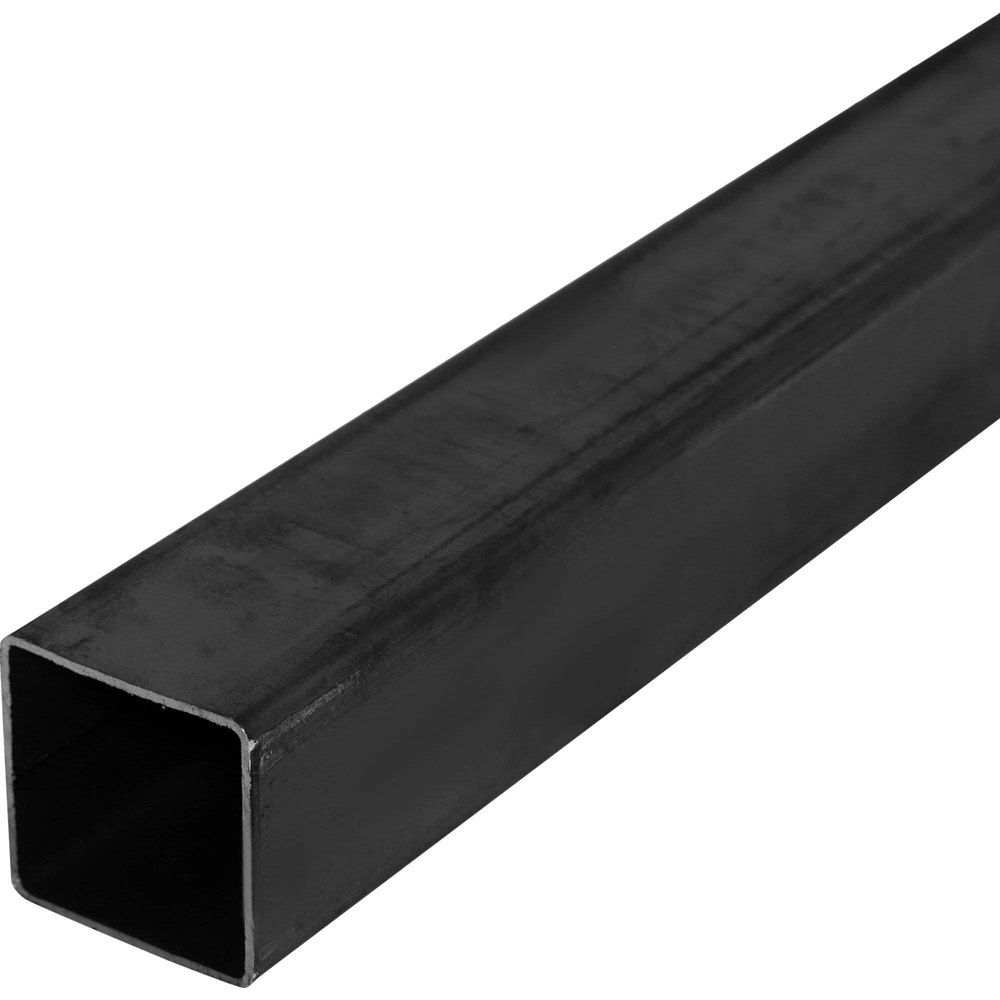
Труба профильная 60×60×2, 3 м Это столб. Три метра: метр в землю, два метра над землёй.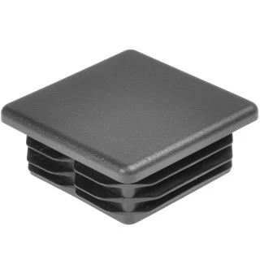
Заглушка пластиковая 60×60 Крышечка на столб. По одной на каждый столб, чтобы внутрь не лилась вода.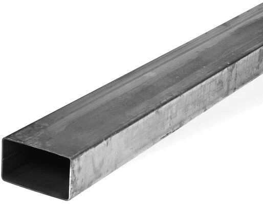
Труба профильная 40×20×1,5, 3 м Это поперечина. На забор высотой 2 метра берут три ряда. Весь металлопрокат Если на полке нет нужной трубы, смотрите весь раздел. Заглушка 60×60 надевается только на столб 60×60.Край листа режет руки. Перчатки кладите каждому, кто берёт этот лист. Рулетка с магнитом сама держится на железе. Если человек копает ямы под столбы сам, ему нужна штыковая лопата: она узкая и входит в землю.
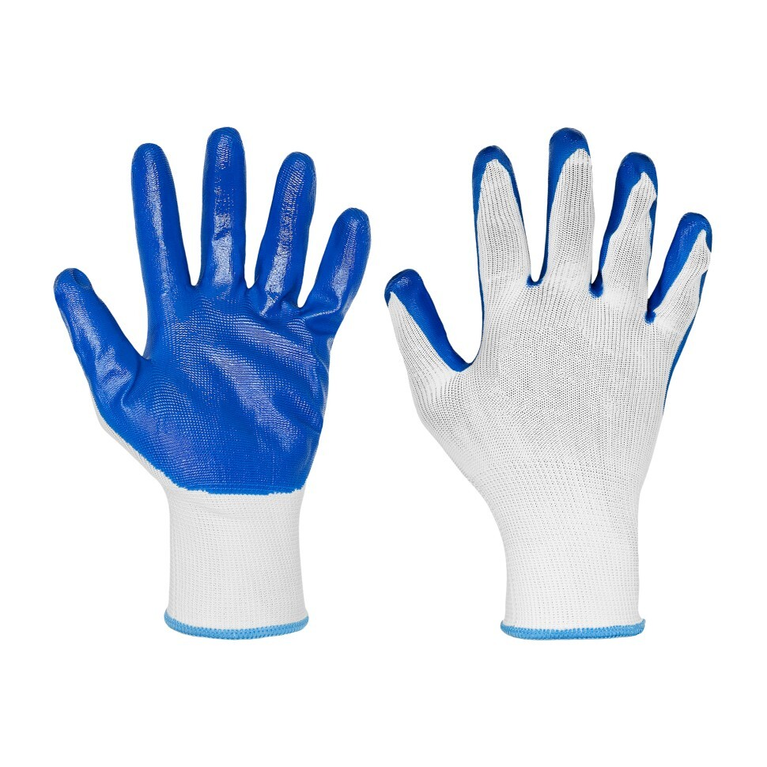
Перчатки нейлоновые с нитриловым покрытием Люкс Мягкие, хорошо держат гладкий лист.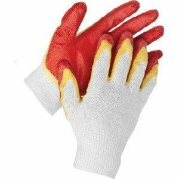
Перчатки х/б с двойной обливной ладонью Простые рабочие, если нужен недорогой вариант.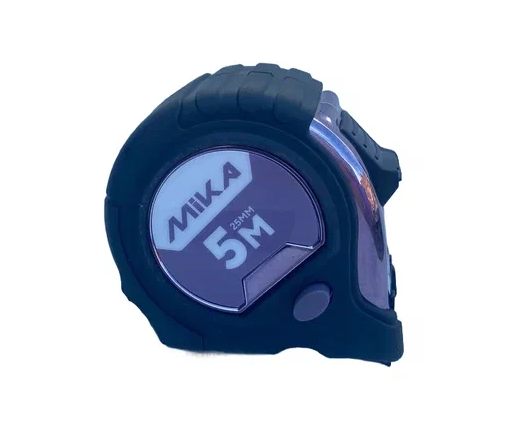
Рулетка магнитная Mika, 5 м Наша рулетка. Магнит цепляется за лист и за трубу. Лопата штыковая, рельсовая сталь Чтобы копать ямы под столбы. Черенок железный, не сломается.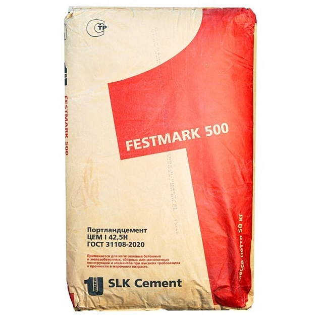
Цемент ЦЕМ I 42,5Н, Сухой Лог, мешок 25 кг Для бетона в яму под столб.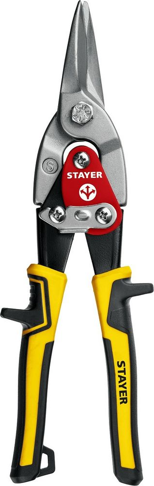
Ножницы по металлу Stayer, прямые, 250 мм Ими укорачивают лист по прямой линии. Болгарку для этого брать нельзя.Болгарку использовать нельзя. Она обжигает краску по краю листа, и с этого места потом идёт ржавчина. Лист режут только ножницами по металлу.
Четыре фразы. Их хватает, чтобы объяснить, зачем в чеке столбы, трубы и шуруп с резинкой.
Ответ открывается по кнопке. Можно сказать его вслух, как покупателю.
Этот лист для забора, стены сарая и калитки. Волна у него низкая. На крыше дома вода может через неё переливаться.
9 листов. Листы немного накрывают друг друга, поэтому на 10 метров их не 8, а 9. Шурупов около 160, в цвет листа.
Коричневый RAL 8017, размер 5,5×19, с резинкой под шляпкой. Если каркас деревянный, на том же цвете берут 4,8×35.